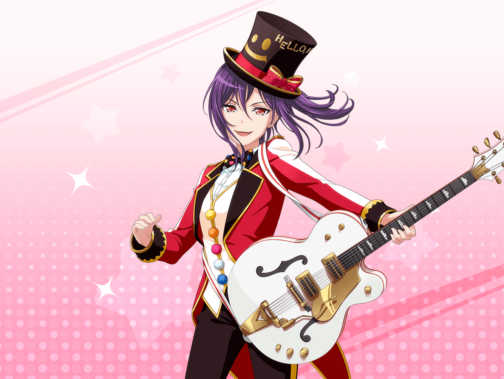

弦巻家
薫
なるほど、新衣装のコンセプトはマジックか。
素晴らしいよこころ、私は賛成だ
こころ
やっぱり！
薫ならそう言ってくれると思っていたわ！
こころ
それでね、その衣装を着てライブでも
マジックを披露したいと思ってるの！
薫
素敵な提案だね、こころ。
以前、ライブでハトを出したことがあっただろう？
あのときの高揚感をまた味わえるのは嬉しいよ
こころ
今度はハトじゃなくてオウムなんてどうかしら？
ライブ会場がカラフルになって
もっともっと楽しくなると思うわ！
薫
オウムか……出したことはないけど、
こころのために、世界を笑顔にするために、
挑戦してみるよ
こころ
さすが、薫ね！
楽しみにしているわ！
こころ
もし、オウムが出せたなら
次はクジャクにも挑戦してみてちょうだい！
薫
クジャク……！
前向きに検討してみるよ
こころ
せっかくなら鳥以外も出したらどうかしら？
犬や猫はもちろん、ライオンなんて華があっていいわね！
薫
百獣の王か……もしステージに登場させられたら、
私達のライブに最高のアクセントを加えるね
こころ
キリンやゾウもいいわね！
動物がたくさんいたらライブがにぎやかになるわ！
薫
それはそれで素晴らしいけど、
それではマジックではなく動物園になってしまうよ？
薫
動物園も楽しいけど、マジックがかすんでしまう。
それはとても、もったいないことだと思うんだ
こころ
それもそうね。
ライブで動物園をするのは、また今度の機会にしましょ！
こころ
今回は、あくまでもマジックをメインにしたいもの！
薫
ところで……
こころや、他のメンバーはどんなマジックをするか
決めてあるのかい？
こころ
まだよ。
やりたい演目がたくさんあって決められないのっ。
でも、空中浮遊は外せないわね！
薫
空中浮遊……！ 儚い……
そうだね、せっかくのマジックだ。
舞台映えをするような演目がほしいね
薫
しかし、大掛かりなものとなると
仕掛けがわからないから私達にできるかどうか……
薫
いや、やる前から躊躇するなんてらしくないな。
やってみないとわからない、か
こころ
そういえば、黒い服の人達がマジックに関する本を
たくさん用意してくれたの。
もしよかったら、見てみない？
薫
ああ、そこにある本の山は何かと思っていたが、
私達のライブを色濃くするための魔導書だったのか。
それでは早速見るとしよう
こころ
瞬間移動に水中脱出……！
んーっ、どれも心ひかれる演目ばかりだわ！
薫の見ている本はどんなことが書いてあるの？
薫
ナイフを使ったマジックについて書かれているみたいだ。
一瞬にしてナイフを増やすマジックや、
ナイフ投げについて、詳しく解説されているよ
薫
危険な道具を使うことで観客を
ハラハラさせる効果があるのはわかるし、
会場が盛り上がることは否定しないが……
薫
ナイフ投げの演目はあまり心ひかれないな。
マジックとはいえ、人に刃物を投げつけるなんてこと
したくないからね
こころ
そうね、危険なマジックはしたくないわ。
だって笑顔が消えちゃうもの
こころ
みんなを笑顔にできないマジックはどれだけ立派なものでも
ハロハピらしくないものね！
薫
こころの言う通りだよ。
やはりこころは私の運命共同体……！
楽しい演目を考えよう
こころ
ええ、そうしましょう！
どの本にあるかしら……？
薫
この表紙のマジシャンはおもしろいね。
ユニークなメイクをほどこして、まるでコメディアンのようだ
こころ
それじゃあ、その本がいいわね！
きっと楽しいマジックについて書かれているわ！
薫
マジックで笑いを誘発させるような方法も書いてあるね。
興味深い……
薫
ん……？
ああ、このマジックはいいね。
会場がきっと笑顔に包まれる
こころ
どんなマジックなの？
薫
まず縦縞模様のハンカチを用意する。
それをクシャクシャっと丸めて広げると……
なんと横縞模様のハンカチになるんだ
こころ
まあ、不思議！
ハンカチの模様が変わるのね！
薫
私はこのマジックをとてもコミカルに決めてみせるよ。
ライブ当日を楽しみにしていてくれ